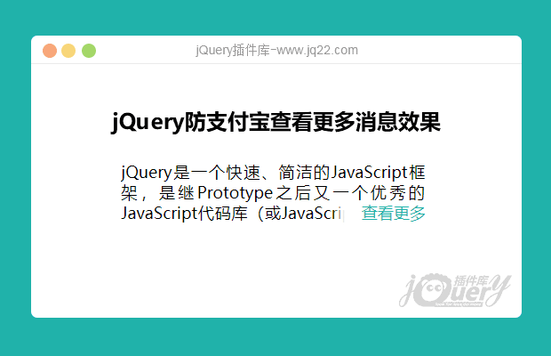
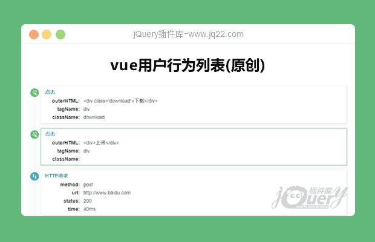
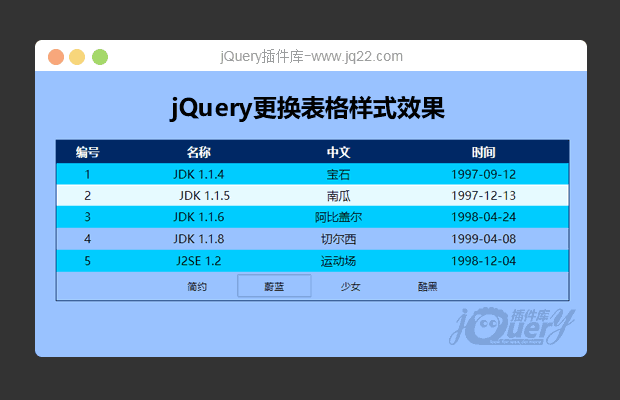
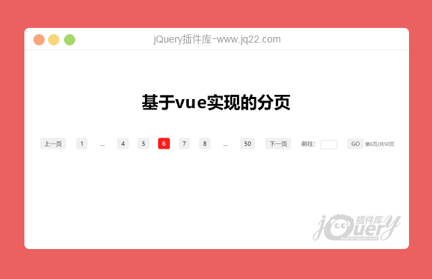
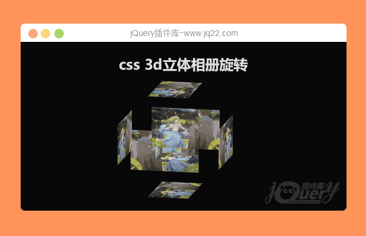
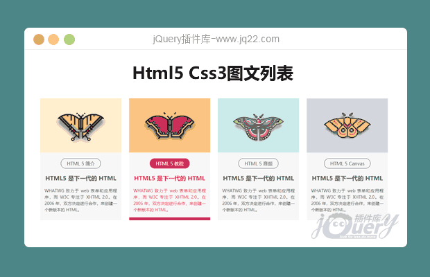
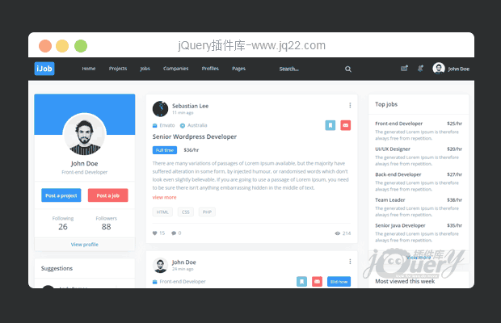

Toggle navigation
在线代码
在线编辑器
文本比较
jQuery下载
前端库
在线手册
微博
注册/登录
(current)
×
登 录
香港美国服务器,双向CN2+BGP极速访问,3.5折限时抢购
找到你梦想
关闭背景特效
UI
|
输入
|
媒体
|
导航
|
其他
|
网页模板
|
APP模板
|
常用代码
|
在线代码
背景
对话框和灯箱
筛选及排序
反馈
弹出层
悬停
布局
图表
加载
圆边
滚动
标签
文本链接
工具提示
网络类型
拾色器
定制和风格
日期和时间
拖和放
通用输入
自动完成
密码
投票率
搜索
选择框
快捷键
触摸
丰富的输入
上传
验证
音频和视频
幻灯片和轮播图
图片展示
图像
地图
滑块和旋转
Tabs
水平导航
垂直导航
文件树
分页
手风琴菜单
其他导航
动画效果
浏览器调整
移动
独立的部件
杂项
游戏
最新插件
Latest jQuery plugin
Advertisement
www.jq22.com

jQuery防支付宝查看更多消息效果
响应式的，只需要调整最外层的容器即可
文本链接,杂项
69
1

vue用户行为列表(原创)
vue用户行为展示组件，简单易用
工具提示,独立的部件,杂项
94
0

jQuery更换表格样式效果
通过改变link的hrf值来改变表格的样式从而达到换肤的效果
定制和风格,杂项
246
1

vue分页插件
基于vue实现的分页效果，代码简单易懂
分页
264
0

css 3d立体相册旋转
纯CSS实现3d立体相册旋转，结合gif动画效果还不错。
动画效果,悬停
381
1

Html5 Css3图文列表
网站常用Html5 Css3图文列表展示效果,鼠标悬停图片放大
图片展示,悬停
193
1

jQuery bootstrap响应式招聘类网站模板
jQuery bootstrap响应式多用途职位招聘类网站模板
布局
572
9
←
最新代码
Latest code
Advertisement
全屏滑块滚动
全屏滑块滚动，图片反向切换
76
0
卡悬停交互|HTML+CSS
鼠标悬停图文展示动画
53
0
svg路径动画
svg路径动画
42
0
←
常用代码
Common code
www.jq22.com
简约css加载动画
常用loadding，纯css自取
161
2
纯css滚动条
css优化默认浏览器滚动条样式
198
1
简单的纯CSS动画加载
纯CSS动画加载,代码简单容易理解
144
0
轮播图基于上次(修改版)
轮播图基于上次修改版，上次少加了东西
201
0
jQuery电子时钟
jQuery电子时钟显示效果
431
0
打勾动画(原创)
打勾动画，引入icon后代码会更简洁
451
1
js动态时间显示
js显示当前时间
332
0
←
版权声明
在线反馈
广告合作
网页技术
jq22工具库
jquery插件
2012-2019 jQuery插件库版权所有. 备案号:
沪ICP备13043785号-1
浙公网安备 33041102000314号